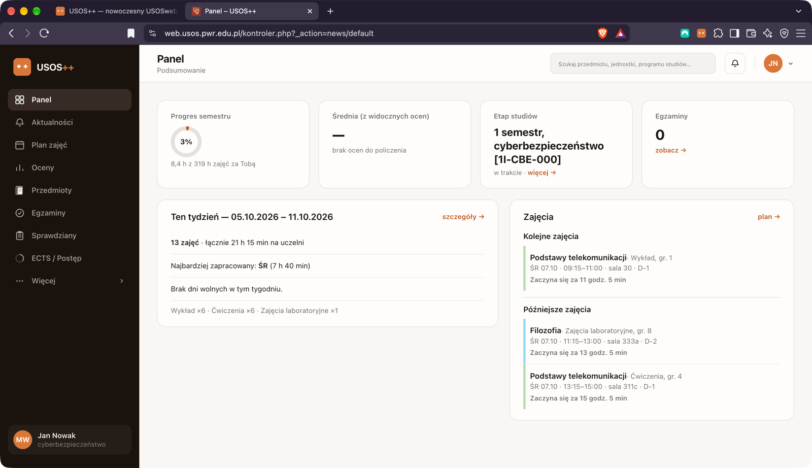

Oceny i średnia — policzone za Ciebie
Oceny z całego toku studiów i średnia liczona automatycznie, tylko z ocen końcowych. Gdy ocen brak — panel uczciwie to mówi, zamiast wymyślać liczbę.
Panel → Oceny
Rozszerzenie do Chrome • Wersja beta • Za darmo
USOS++ nakłada nowoczesny panel na istniejący USOSweb Twojej uczelni. To samo logowanie, te same dane — bez przeklikiwania się przez rozjeżdżające się podstrony.
Na komputerze: Chrome, Edge, Brave, Opera — bez rejestracji.

Funkcje
Bez zbędnego klikania między podstronami. Tylko funkcje, które rozszerzenie ma naprawdę.
Oceny z całego toku studiów i średnia liczona automatycznie, tylko z ocen końcowych. Gdy ocen brak — panel uczciwie to mówi, zamiast wymyślać liczbę.
Panel → Oceny
Czytelny plan na dziś i cały tydzień — z salami, budynkami i prowadzącymi. A przed zapisami ułożysz przykładowy plan z realnych grup, z podglądem kolizji i zajętości miejsc. To tylko podgląd: rozszerzenie nikogo nigdzie nie zapisuje.
Panel → Plan zajęć
Ile i za co zostało do zapłaty — z podpowiedzią o zaległościach także w klasycznym widoku USOS.
Wszystkie terminy w jednym miejscu, zamiast szukania po zakładkach. Do tego ECTS i postęp etapu oraz widok Studentów ze wspólnymi zajęciami.
Przedmioty, jednostki i programy studiów prosto z górnego paska — plus mapa budynków uczelni na danych z USOS.
Ogłoszenia wydziału z centrum powiadomień, tryb ciemny, skróty 1–9. Drobne widżety i pasek szybkich akcji pomagają nawet przy wyłączonym panelu.
A do tego w tym samym panelu: stypendia, podania, ankiety i mLegitymacja — oraz edytowalny układ strony Mój USOSweb.
Przed i po
To nie aplikacja mobilna ani zamiennik USOS-a. USOS++ działa na komputerze, w przeglądarkach Chromium — na Twoim zalogowanym USOSweb.
Jak to działa
Jednym kliknięciem z Chrome Web Store, na komputerze — w Chrome, Edge, Brave czy Operze. Bez rejestracji i bez podawania danych.
To samo logowanie uczelniane, ta sama strona. USOS++ nie ma własnego logowania ani bazy użytkowników.
Rozszerzenie czyta lokalnie to, co przeglądarka już widzi, i pokazuje to wygodniej: pasek boczny, wyszukiwarka, karty. Klasyczny widok zawsze pod ręką.
Kandydaci
Oferta kierunków z wyszukiwarką i porównywarką, szczegóły, jednostki, aktualności — a po zalogowaniu także zgłoszenia, formularze, płatności, wiadomości i konto. Wszystko tylko do odczytu.
Prywatność
Krótko, po ludzku. Pełna wersja jest w polityce prywatności projektu.
Oceny, plan czy płatności są przetwarzane w pamięci Twojej karty i pokazywane na ekranie. Nic nie trafia na żaden zewnętrzny serwer autora.
Brak analityki, telemetrii i reklam. Cały kod jest w paczce rozszerzenia i przechodzi przegląd Chrome Web Store.
Rozszerzenie prosi wyłącznie o to, czego realnie używa — a obsługę innej uczelni dodajesz świadomie, jednym kliknięciem.
Widok mapy pobiera publiczne obrazki kafelków z OpenStreetMap dla budynków z USOS. Nigdy nie pyta o Twoją lokalizację.
Beta
USOS++ powstał i jest testowany na USOSweb PWr (web.usos.pwr.edu.pl). Korzystasz z USOS na innej uczelni? Obsługę jej strony dodasz jednym kliknięciem w oknie rozszerzenia — Chrome jawnie poprosi Cię o zgodę tylko dla tej jednej domeny.
FAQ
Nie. To rozszerzenie przeglądarkowe, które nakłada wygodniejszy wygląd na istniejący USOSweb Twojej uczelni. System, dane i logowanie zostają te same.
Nie. Logujesz się do USOSweb dokładnie tak jak dotychczas. USOS++ nie ma własnego logowania ani bazy użytkowników.
Nie. USOS++ to rozszerzenie do przeglądarki na komputerze — działa w Chrome i innych przeglądarkach opartych na Chromium (m.in. Edge, Brave, Opera). Nie jest to aplikacja mobilna ani osobna aplikacja.
USOS++ czyta tylko to, co Twoja zalogowana przeglądarka i tak już widzi na stronach USOSweb, i buduje z tego lepszy interfejs — lokalnie, u Ciebie. Nic nie trafia na zewnętrzny serwer, nie ma analityki ani reklam. Jedyny wyjątek to widok Mapy, który pobiera publiczne kafelki mapy z OpenStreetMap.
Zweryfikowany jest USOSweb Politechniki Wrocławskiej. Obsługę innej uczelni na tej samej platformie USOS dodasz jednym kliknięciem w oknie rozszerzenia, z jawnym potwierdzeniem uprawnień przez Chrome.
Rozszerzenie pomaga też kandydatom przeglądać rekrutację IRK — ofertę kierunków, szczegóły, zgłoszenia, formularze, płatności i wiadomości — w czytelniejszym widoku. Wszystko tylko do odczytu: niczego nie wysyła ani nie opłaca za Ciebie.
Projekt rozwija jedna osoba — student — więc część podstron może jeszcze nie działać idealnie. Rozszerzenie zawsze uczciwie oznacza takie miejsca w interfejsie, a błędy możesz zgłaszać na GitHubie.
Za darmo • W minutę • Bez nowego konta
Zainstaluj USOS++ na komputerze i zobacz swój USOSweb w jednym, szybkim panelu. Z powrotem do klasycznego widoku w każdej chwili.
Zgłoś błąd lub pomysł · Kod na GitHubie · Instagram @usosplus · usosplus@zuukie.dev